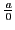

Next: Infinitesimals Up: Theory of limits Previous: Limit of a variable Contents Index
 is indeterminate. For the quotient of two numbers
is that number which multiplied by the divisor will give
the dividend. But any number whatever multiplied by zero
gives zero, and the quotient is indeterminate; that is,
any number whatever may be considered as the quotient, a
result which is of no value.
is indeterminate. For the quotient of two numbers
is that number which multiplied by the divisor will give
the dividend. But any number whatever multiplied by zero
gives zero, and the quotient is indeterminate; that is,
any number whatever may be considered as the quotient, a
result which is of no value.
 has no meaning,  being different from zero,
for there exists no number such that if it be multiplied by zero,
the product will equal
being different from zero,
for there exists no number such that if it be multiplied by zero,
the product will equal  .
.
Therefore division by zero is not an admissible operation.
Care should be taken not to divide by zero inadvertently. The following fallacy is an illustration. Assume that
david joyner 2008-08-11